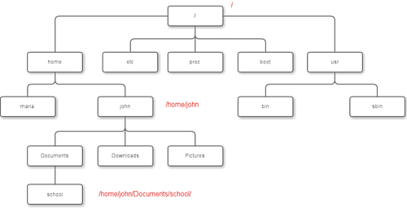

02: The Unix tree

Looking at directories from within a Unix terminal can often seem confusing. But bear in mind that these directories are exactly the same type of folders that you can see if you use any graphical file browser. From the root level (/) there are usually around 20 directories. You can treat the root directory like any other, e.g. you can list its contents with ls:
learner@:~$ ls /
bin dev initrd.img lib64 mnt root software tmp vmlinuz
boot etc initrd.img.old lost+found opt run srv usr vmlinuz.old
data home lib media proc sbin sys var
You might notice some of these names appearing in different colors. Many Unix systems will display files and directories differently by default. Other colors may be used for special types of files. When you log in to a computer you are working with your files in your home directory, and this is often inside a directory called 'users' or 'home'.